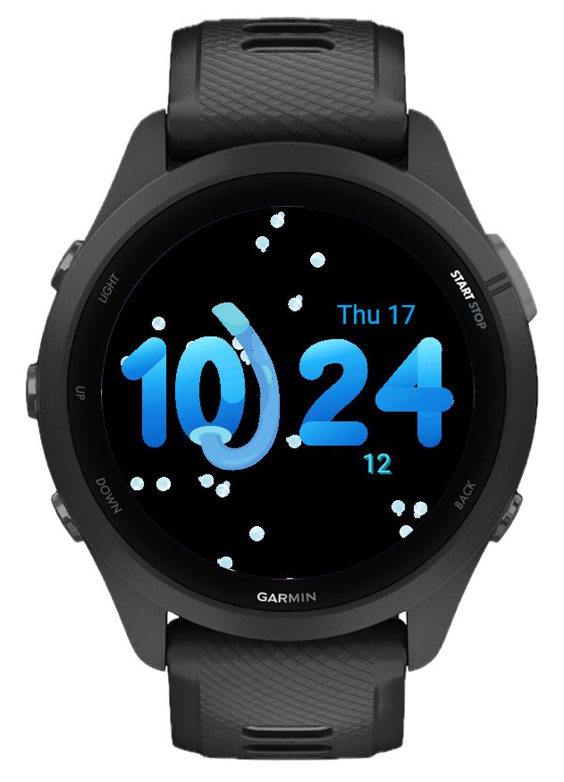
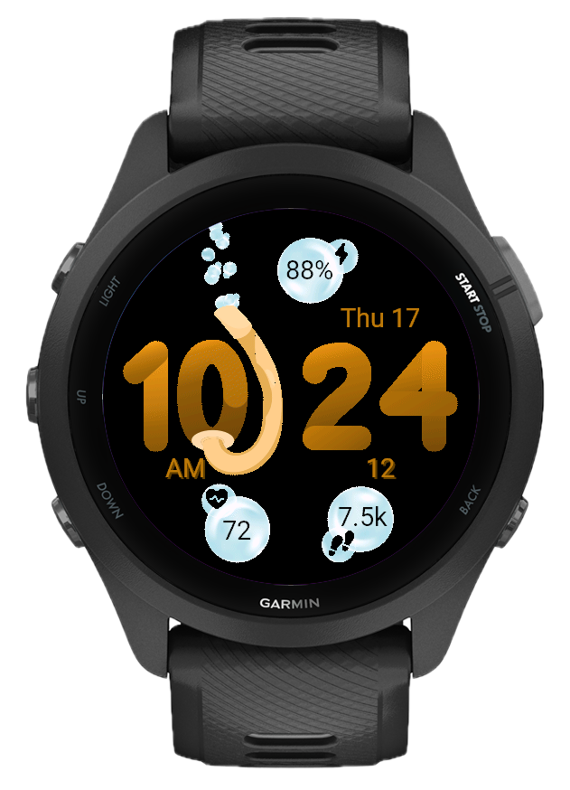
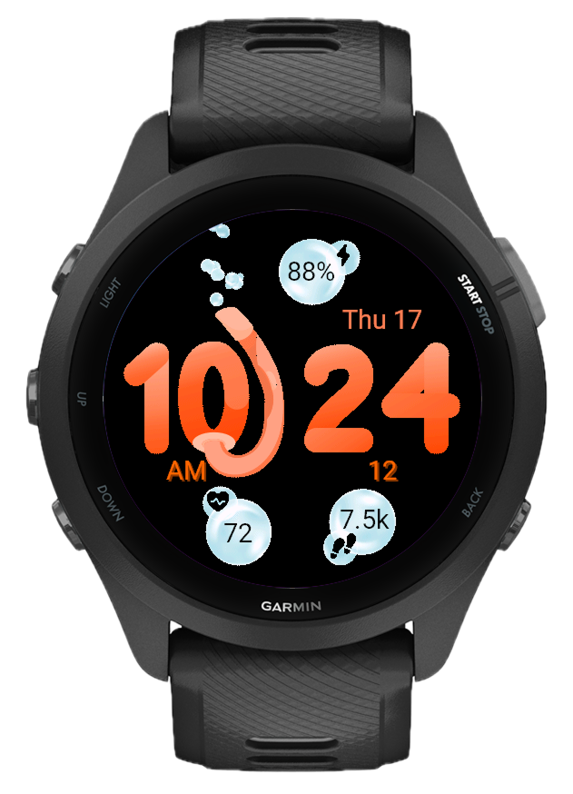
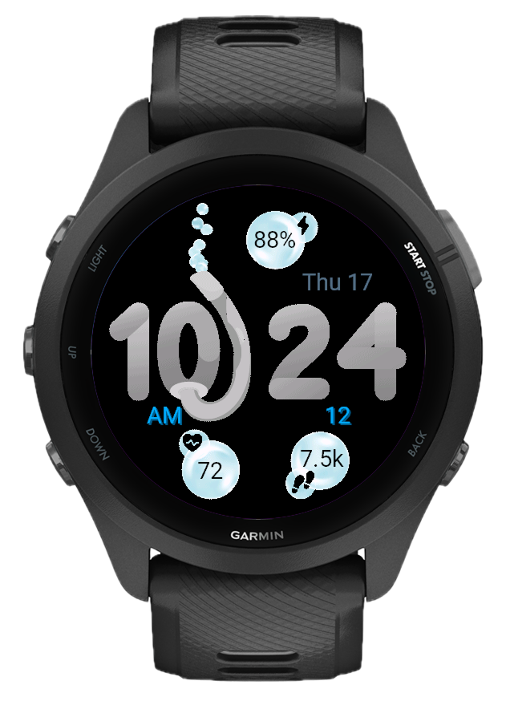
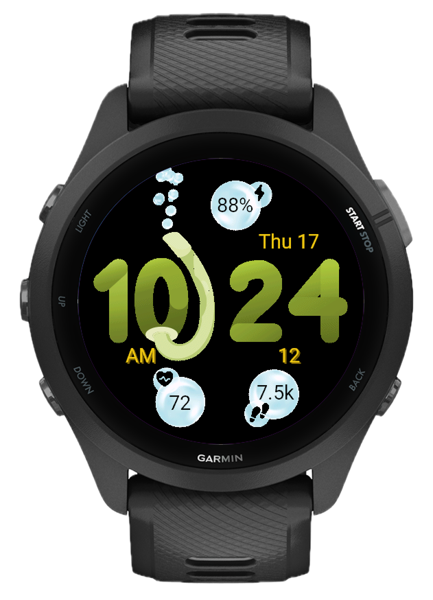
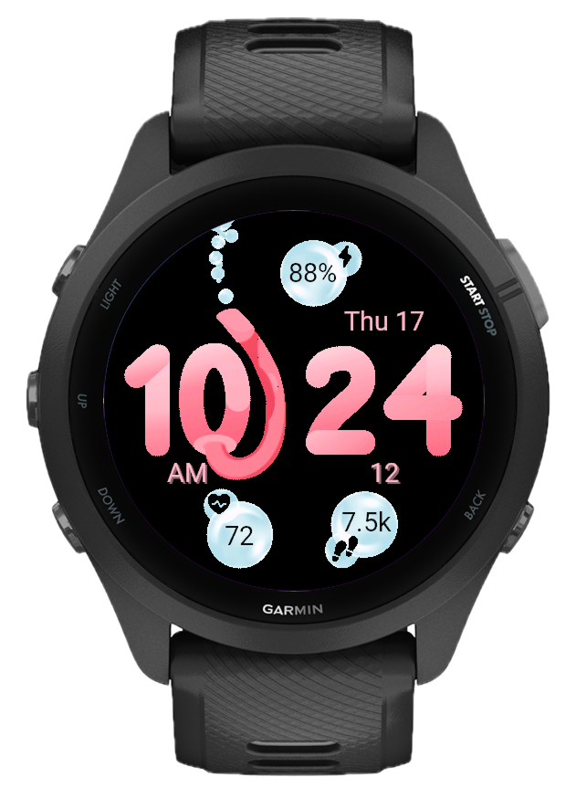

Rising bubbles, every second
The face runs a continuous bubble particle animation: translucent spheres of varying sizes drift upward across the screen, creating a calm underwater feel. The animation updates every second alongside the time, giving the face constant motion without distraction. Bubble Mode lets you switch between different animation styles to match your preference.

Three fields, fully configurable
Three bubble overlays sit at the bottom left, bottom right, and top of the face. Each one displays a metric with a dedicated icon at its center: Steps, Calories, Heart Rate, Battery, Active Minutes, Floors, Body Battery, Stress, or VO2 Max. Reassign any slot independently in settings, or turn it off entirely to keep the face clean.

9 themes, fully configurable
Choose from 9 built-in themes (Blue, Coral, Arctic, Matcha, Coffee, Rose, Midnight, Stone, Classic), each carefully tuned for the arc, digits, date, and background. Or go fully custom: pick from 14 named colors for each element independently and make the face entirely yours.

Large digits, clean layout
The time is rendered using large colored bitmap digits that fill the center of the face and are impossible to miss. Date sits above the hours, seconds below the minutes (optional). Toggle seconds on or off and choose between 12h and 24h format.

A snorkel, hidden in plain sight
Look closely and you'll find a snorkel character tucked into the face, a small diving detail that gives Bubble Dive its personality. It shifts position with the bubble animation, part of the same underwater world the bubbles live in.

Everything at once
With all three data bubbles filled and the animation running, the face is as information-dense as it is alive. Steps bottom left, heart rate bottom right, calories at the top: everything glanceable, nothing cluttered. Or turn the bubbles off entirely and let the animation breathe on its own.

Built for Garmin, built to move
No clutter, no ads, no subscriptions. Bubble Dive works on 54+ Garmin devices across Fenix, Forerunner, Venu, Instinct, epix, Descent, and more.
What's new
- Large colored bitmap digits for hours and minutes
- Date display above the hours
- Seconds display below the minutes (optional)
- 12h/24h time format
- Live bubble particle animation with translucent rising spheres
- Bubbles drift upward continuously and refresh every second
- Bubble Mode setting to switch between animation styles
- Three configurable data slots: Bottom Left, Bottom Right, Top
- Steps, Calories, Heart Rate, Battery, Active Minutes
- Floors, Body Battery, Stress, VO2 Max
- Each slot independently assignable or hideable
- 9 built-in themes: Blue, Coral, Arctic, Matcha, Coffee, Rose, Midnight, Stone, Classic
- Arc, time, date, and background each independently configurable
- 14 named colors: Cyan, Blue, Black, Orange, Coral, White, Amber, Matcha Green, Bronze, Baby Pink, Light Gray, Gray Blue, Dark Gray, Warm Gold
- Time format (12h / 24h)
- Show seconds (on / off)
- Bubble mode
- Approach® S50, S70 42mm, S70 47mm
- D2® Air X10, Mach 1, Mach 2, Mach 2 Pro
- Descent® G2, Mk3 43mm, Mk3 51mm
- Enduro® 3
- epix™ 2, epix™ Pro 42mm / 47mm / 51mm
- fēnix® 7 / 7S / 7X, fēnix® 7 Pro / 7S Pro / 7X Pro (with and without Wi-Fi)
- fēnix® 8 43mm / 47mm, fēnix® 8 Pro 47mm
- fēnix® 8 Solar 47mm / 51mm, fēnix® E
- Forerunner® 165 / 165m, 170 / 170m, 255 / 255m / 255S / 255Sm
- Forerunner® 265 / 265S, 570 42mm / 47mm, 70, 955, 965, 970
- Instinct® 3 AMOLED 45mm / 50mm, Instinct® Crossover AMOLED
- MARQ® (Gen 2), MARQ® Aviator (Gen 2)
- Venu® 2 / 2 Plus / 2S, Venu® 3 / 3S, Venu® 4 41mm / 45mm
- Venu® SQ 2 / SQ 2 Music, Venu® X1
- vívoactive® 5, vívoactive® 6